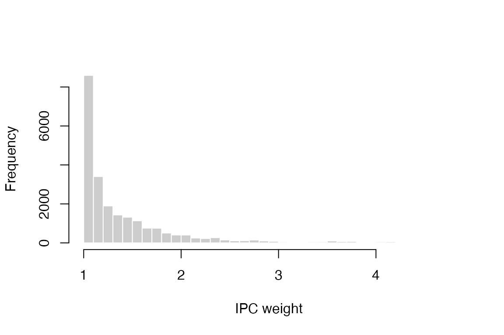

An Overview of the ccwr Package for R
Jihyeon Baek, Hye Won Yang
2026-08-12
Source:vignettes/ccwr.Rmd
ccwr.RmdIntroduction
ccwr implements the clone-censor-weight (CCW)
procedure for emulating a target trial from observational time-to-event
data.
Suppose we want to know whether surgery improves survival in lung cancer patients. Naively comparing those who had surgery against those who did not can be badly misleading. A central culprit is immortal time bias: to be counted in the “surgery” group, a patient must first survive long enough to receive surgery, and that guaranteed survival time is then credited to the surgery group as though it were a benefit of the operation.
CCW is the standard target-trial-emulation remedy for this bias, and its name traces the three steps it takes:
- Clone – each patient is duplicated into every treatment strategy being compared, so that at the start of follow-up every clone is compatible with the strategy it is assigned to.
- Censor – a clone is censored the moment the patient’s observed history stops being consistent with the strategy that clone represents.
- Weight – inverse-probability-of-censoring weights undo the selection bias introduced by that artificial censoring.
The package exposes these steps as a small set of composable functions: they clone a subject-level dataset across strategies, apply the artificial censoring each strategy implies, expand the result into the person-time format that an inverse-probability-of-censoring weighted (IPCW) analysis requires, and fit the weighted per-protocol effect.
The rest of this document is organised as follows. Section 2 reviews target trial emulation and introduces the data. Section 3 works through the method on that data, presenting each of the three ideas – cloning, artificial censoring, and IPC weighting – with its rationale and immediately in code, building up the analysis dataset step by step and then estimating the weighted per-protocol effect. Section 4 summarises the workflow.
We assume familiarity with the basic ideas of target trial emulation and inverse-probability weighting. The target-trial framework we emulate is set out by Hernán and Robins [2016] and Hernán, Wang and Leaf [2022]; marginal structural models and the use of IPC weighting to adjust for time-varying selection are developed by Robins, Hernán and Brumback [2000] and applied by Hernán, Brumback and Robins [2000], with inverse-probability-of-censoring weighting itself introduced by Robins and Finkelstein [2000]. Hernán [2018] sets out the cloning-censoring-weighting strategy for treatment-duration questions of the kind considered here. Maringe et al. [2020] discuss trial emulation specifically as a remedy for immortal-time bias, and Gaber et al. [2024] give a practical account of implementing clone-censor-weight with stabilized IPCW, which the implementation here follows.
Target trial emulation
The problem it solves
A randomized controlled trial (RCT) can directly compare “following strategy A to the end” versus “following strategy B to the end.” The difficulty with observational data is that no such assignment exists. People are not split into A/B at baseline; over time they begin, switch, or stop treatments according to their evolving health.
The hardest case is when the strategy is defined by something that happens in the future, not at baseline. Consider the strategy “receive surgery within 6 months of diagnosis.” At diagnosis (baseline) we cannot know whether a person will go on to have surgery within 6 months. If we split people at baseline into “surgery” versus “no surgery,” anyone who dies before surgery is automatically classified into the no-surgery arm, producing immortal time bias.
Hernán and Robins [2016] proposed a simple remedy: specify the RCT you would ideally run (the target trial), then emulate that trial using observational data. A target trial is specified through seven components. Table 1 maps those components onto this vignette’s running example (surgery within 6 months of diagnosis).
| Target trial component | Definition in this example |
|---|---|
| 1. Eligibility | Patients alive at diagnosis and not yet operated on |
| 2. Treatment strategies | (A) surgery within 6 months / (B) no surgery within 6 months |
| 3. Assignment | No assignment in observational data replaced by cloning |
| 4. Follow-up | From baseline (diagnosis) to death or end of observation |
| 5. Outcome | Overall survival |
| 6. Causal contrast | Per-protocol effect (effect of following the strategy to the end) |
| 7. Analysis | Artificial censoring + IPCW, then weighted survival analysis |
Data
The ccwr package is concerned with the causal analysis
of time-to-event outcomes. The bundled lungcancer dataset
contains 200 simulated lung cancer patients followed for up to one year
after diagnosis; 106 received surgery within six months and 48 died
during follow-up.
data(lungcancer)
head(lungcancer)
#> id surgery timetosurgery death sex charlson perf stage emergency fup_obs
#> 1 P5958 0 NA 0 2 1 2 2 1 365.24
#> 2 P3075 0 NA 0 2 1 0 2 0 365.24
#> 3 P1410 0 NA 0 1 1 2 1 0 365.24
#> 4 P4957 0 NA 0 2 0 1 1 0 365.24
#> 5 P7340 0 NA 1 1 0 2 2 1 123.00
#> 6 P1917 0 NA 0 2 0 0 1 0 365.24
#> age deprivation
#> 1 79.57290 0.42
#> 2 82.91855 0.07
#> 3 84.03011 0.22
#> 4 78.34634 0.12
#> 5 83.63860 0.40
#> 6 82.26147 0.03The columns the analysis relies on are:
-
id: patient identifier -
surgery: whether the patient received surgery (1) or not (0) -
timetosurgery: time from baseline to surgery (NAif never operated on) -
death: whether the patient died (1) or not (0) – the outcome event -
fup_obs: observed follow-up time
The remaining columns (sex, charlson,
perf, stage, emergency,
age, deprivation) describe patient
characteristics that can be used as covariates when estimating censoring
weights. Below we use age and sex.
Reading your own data
The example uses the bundled lungcancer data, but the
same workflow runs on any subject-level dataset that provides, at a
minimum:
- an identifier column for each patient;
- a binary treatment column, coded
0/1; - a time-to-treatment column (numeric,
NAfor the untreated); - a binary outcome column, coded
0/1; - a numeric follow-up-time column.
The column names are up to you: you pass them to the
relevant function arguments (the treatment, outcome and follow-up names
to the policy and censoring helpers; the identifier to
create_final_data(); any covariates to
estimate_censoring()), as we do in Section 3. Any
additional columns are carried along and can serve as covariates.
read_trial_data() is a small convenience wrapper for
reading such data from a CSV file into a tibble. It imposes no
particular column structure; it simply reads the file:
my_data <- read_trial_data("path/to/your-data.csv")Clone-censor-weighting
We now walk through the method on the lungcancer data.
Each of the three ideas that give the method its name – clone, censor,
weight – is presented with its rationale and then applied immediately in
code, checking the result at each turn. A final step estimates the
effect from the clone-censor-weighted data. We compare two strategies
with a six-month grace period
(
days).
The grace period is central to this analysis: it is the window during which a patient is still considered compatible with the “surgery” strategy. A patient who has surgery within the grace period is consistent with the treated strategy; one who does not is consistent with the control strategy. Hernán [2018] discusses how such duration strategies should be specified and emulated.
arms <- c("Control", "Surgery")
grace_period <- 182.62Clone
Each eligible individual is duplicated once per strategy being compared. With two strategies, one person becomes two clones. At baseline nobody has yet violated any strategy, so at the moment of duplication both clones share an identical history. This makes the baseline covariates exactly balanced across arms, removing the source of immortal time bias.
clone_arms() carries this out, returning a list with one
data frame per arm. At this point the two are identical copies of the
original data; the strategy-specific logic comes next.
clones <- clone_arms(lungcancer, arms)
names(clones)
#> [1] "Control" "Surgery"
sapply(clones, nrow)
#> Control Surgery
#> 200 200Censor
Each clone is artificially censored the first moment it deviates from the strategy it represents.
- The “surgery within 6 months” clone: if 6 months pass without surgery, the clone has now violated its strategy and is censored at the 6-month mark. If surgery occurs in time, the clone remains in the risk set.
- The “no surgery within 6 months” clone: if surgery occurs within 6 months, the clone is censored at the time of surgery.
In other words, each clone stays under follow-up only while it remains consistent with its strategy.
The intuition, traced by hand
Before applying the package functions, it helps to trace the
censoring by hand on a small dataset. The bundled
patients13 dataset is exactly that: the 13 patient records
of Figure 2 in Maringe et al. [2020], chosen to cover every censoring
pattern that can arise in registry data. Times are in days, on the same
scale as lungcancer.
data(patients13)
patients13
#> id surgery time_to_surgery death followup
#> 1 A 1 61 1 300
#> 2 B 1 150 0 365
#> 3 C 1 20 1 150
#> 4 D 1 140 0 160
#> 5 E 1 10 0 300
#> 6 F 1 220 1 320
#> 7 G 1 340 0 365
#> 8 H 1 200 0 300
#> 9 I 0 NA 0 365
#> 10 J 0 NA 1 260
#> 11 K 0 NA 1 40
#> 12 L 0 NA 0 140
#> 13 M 0 NA 0 320Here time_to_surgery is the time to surgery
(NA if the patient never had surgery),
followup is the observed follow-up time, and
death is the event indicator
(
= death).
Using the same six-month grace_period as above, we work
out when each clone is censored. The one subtlety is that a clone can
only deviate from a strategy if it is still under observation
at the moment the deviation would occur: a patient whose follow-up ends
before the grace period closes never gets the chance to violate the
“surgery within 6 months” strategy, so their observed outcome still
counts.
## --- Surgery-arm clone: surgery must occur within the grace period ---
## * surgery in time -> adherent, follow to end of observation
## * still unoperated when the
## grace period closes -> censored there
## * follow-up ends before that -> no deviation, observed outcome stands
surg_clone <- within(patients13, {
adherent <- !is.na(time_to_surgery) & time_to_surgery <= grace_period
deviates <- !adherent & followup > grace_period
fu_time <- ifelse(deviates, grace_period, followup)
status <- ifelse(deviates, 0, death) # censored -> status = 0
arm <- "Surgery"
})
## --- Control-arm clone: surgery must NOT occur within the grace period ---
## * surgery within the grace period -> censored at the time of surgery
## * otherwise -> adherent, follow to end of observation
ctrl_clone <- within(patients13, {
deviates <- !is.na(time_to_surgery) & time_to_surgery <= grace_period
fu_time <- ifelse(deviates, time_to_surgery, followup)
status <- ifelse(deviates, 0, death)
arm <- "Control"
})
cols <- c("id", "arm", "fu_time", "status")
rbind(surg_clone[cols], ctrl_clone[cols])
#> id arm fu_time status
#> 1 A Surgery 300.00 1
#> 2 B Surgery 365.00 0
#> 3 C Surgery 150.00 1
#> 4 D Surgery 160.00 0
#> 5 E Surgery 300.00 0
#> 6 F Surgery 182.62 0
#> 7 G Surgery 182.62 0
#> 8 H Surgery 182.62 0
#> 9 I Surgery 182.62 0
#> 10 J Surgery 182.62 0
#> 11 K Surgery 40.00 1
#> 12 L Surgery 140.00 0
#> 13 M Surgery 182.62 0
#> 14 A Control 61.00 0
#> 15 B Control 150.00 0
#> 16 C Control 20.00 0
#> 17 D Control 140.00 0
#> 18 E Control 10.00 0
#> 19 F Control 320.00 1
#> 20 G Control 365.00 0
#> 21 H Control 300.00 0
#> 22 I Control 365.00 0
#> 23 J Control 260.00 1
#> 24 K Control 40.00 1
#> 25 L Control 140.00 0
#> 26 M Control 320.00 0Three rows carry the whole idea. Patient A has surgery on day 61: adherent in the surgery arm and followed to death on day 300, but censored on day 61 in the control arm. Patient F is the mirror image – surgery on day 220, after the grace period has closed – so the surgery-arm clone is censored at day 182.62 while the control-arm clone remains adherent and contributes its death on day 320. Patient K never has surgery and dies on day 40, before the grace period closes: neither strategy has been violated, so that death counts in both arms. This table is the core intuition of CCW.
Deriving the grace-period rules
The package derives exactly this censoring from the grace-period rules, on the real data. Two helper functions describe how each arm’s emulated outcome, follow-up, and censoring should be derived. Note that they do not touch the data yet: they return the rules (as expressions), one nested list entry per arm, which are evaluated in the next step.
create_policy_A() produces the rules for the emulated
outcome and follow-up under the grace-period policy, and
create_censoring_logics_A() produces the rules for the
censoring indicator and the time at which that indicator can first be
determined. Here we name the resulting columns explicitly
(outcome, fup, censoring,
fup_uncensored); if these arguments are omitted, the
dot-prefixed names .outcome, .fup,
.censoring and .fup_uncensored are used
instead.
apply_logics() evaluates a set of rules against each
arm’s data, so we call it once per rule set.
policies <- create_policy_A(
arms,
treatment = "surgery",
time_to_treatment = "timetosurgery",
grace_period = grace_period,
outcome = "death",
followup = "fup_obs",
clone_outcome = "outcome",
clone_followup = "fup"
)
clones_policy <- apply_logics(clones, policies)
censoring_logics <- create_censoring_logics_A(
arms,
treatment = "surgery",
time_to_treatment = "timetosurgery",
grace_period = grace_period,
followup = "fup_obs",
clone_censoring = "censoring",
clone_uncensored_followup = "fup_uncensored"
)
clones_censored <- apply_logics(clones_policy, censoring_logics)
setdiff(names(clones_censored$Surgery), names(lungcancer))
#> [1] "outcome" "fup" "censoring" "fup_uncensored"Each arm’s data frame now carries these four emulated variables alongside the original columns.
Expanding to person-time
Finally, create_final_data() expands each clone into a
counting-process (“long”) table – one row per patient-time interval,
bounded by Tstart and Tstop – the format the
weighting step requires. Internally it finds every event time, splits
each patient’s follow-up at those times, and combines the outcome and
censoring information into one table per arm. Because each patient
contributes several intervals, each arm has many more rows than the
original 200 patients.
clones_final <- create_final_data(
clones_censored,
clone_followup = "fup",
clone_outcome = "outcome",
clone_censoring = "censoring",
col_ids = "id"
)
head(clones_final$Surgery)
#> id surgery timetosurgery death sex charlson perf stage emergency fup_obs
#> 1 P5958 0 NA 0 2 1 2 2 1 365.24
#> 2 P5958 0 NA 0 2 1 2 2 1 365.24
#> 3 P5958 0 NA 0 2 1 2 2 1 365.24
#> 4 P5958 0 NA 0 2 1 2 2 1 365.24
#> 5 P5958 0 NA 0 2 1 2 2 1 365.24
#> 6 P5958 0 NA 0 2 1 2 2 1 365.24
#> age deprivation fup_uncensored ID Tstart fup outcome censoring Tstop ID_t
#> 1 79.5729 0.42 182.62 1 0 1 0 0 1 0
#> 2 79.5729 0.42 182.62 1 1 7 0 0 7 1
#> 3 79.5729 0.42 182.62 1 7 8 0 0 8 2
#> 4 79.5729 0.42 182.62 1 8 10 0 0 10 3
#> 5 79.5729 0.42 182.62 1 10 16 0 0 16 4
#> 6 79.5729 0.42 182.62 1 16 18 0 0 18 5
sapply(clones_final, nrow)
#> Control Surgery
#> 8792 13980Weight
The catch is that this artificial censoring is not random. Whether a clone deviates (and is censored) is related to its evolving health. If, say, sicker patients are more or less likely to have surgery, the censoring introduces selection bias, which inverse-probability-of-censoring weighting (IPCW) corrects [Robins and Finkelstein 2000].
Some notation first. Index individuals by and discrete follow-up times by ; let be the baseline covariates and the covariate history through time . For a clone in a given arm, let mean it is artificially censored at time , and that it was still uncensored up to time . The probability of being censored in an interval is modelled by pooled logistic regression on the person-time data – the discrete-time hazard approach of Efron [1988], whose close correspondence with time-dependent Cox regression is established by D’Agostino et al. [1990] –
with
the interval start time. By default,
is linear. Setting time_spline_df = 3 uses a natural cubic
spline with 3 degrees of freedom, allowing the baseline log-odds of
censoring to vary nonlinearly over follow-up. Spline flexibility should
be supported by enough censoring events; sparse or structurally
concentrated censoring can otherwise cause separation. IPCW then
multiplies each clone by the inverse probability of “remaining
uncensored so far,” reallocating the contribution of censored clones to
similar clones that remain. The unstabilized weight
is
and the stabilized weight replaces the constant numerator by a baseline-only model – the same regression, but with in place of :
The denominator conditions on the full time-varying history and models the actual censoring mechanism; the numerator conditions on baseline covariates only, reducing the variance of the weights without changing the causal estimand; this stabilization is due to Robins, Hernán and Brumback [2000]. Taking the cumulative product across time gives or .
In the package, estimate_censoring() fits these
probabilities and adds the uncensoring probability P_uncens
to each row; weight_cases() forms the weight in the column
weight_Cox. Here age and sex are
fixed at baseline and there are no time-varying covariates, so a
stabilized weight with a baseline-only numerator would collapse to 1 at
every interval and remove the adjustment entirely. We therefore use the
unstabilized weight, whose denominator still adjusts for the
age/sex dependence of censoring.
clones_estimated <- estimate_censoring(
clones_final,
predictors = c("age", "sex"),
method = "pooled_logit"
)
clones_weighted <- weight_cases(clones_estimated)It is good practice to inspect the weight distribution: extremely large weights inflate variance and can signal near-violations of positivity. Cole and Hernán [2008] give practical guidance on constructing and checking such weights.
weights_all <- unlist(
lapply(clones_weighted, function(x) x[["weight_Cox"]]),
use.names = FALSE
)
summary(weights_all)
#> Min. 1st Qu. Median Mean 3rd Qu. Max.
#> 1.000 1.054 1.176 1.409 1.532 4.751
hist(weights_all, breaks = 40, col = "grey80", border = "white",
main = NULL, xlab = "IPC weight")
Distribution of IPC weights.
Estimating the effect
With clone-censor-weighted data in hand, emul_estimate()
fits the weighted Cox model
weighting each person-time record by its IPC weight. The per-protocol hazard ratio is – the causal contrast specified in Section 2.
cox_fit <- emul_estimate(
clones_weighted,
method = "Cox",
weights = "weight_Cox",
predictors = c("age", "sex")
)
summary(cox_fit)$conf.int
#> exp(coef) exp(-coef) lower .95 upper .95
#> armsSurgery 0.4905093 2.038697 0.3216575 0.7479989
#> age 0.9702208 1.030693 0.9150175 1.0287545
#> sex 0.4788167 2.088482 0.2543053 0.9015361Because the weights make the effective sample differ from the raw
data, the model-based standard error is unreliable.
emul_estimate_bootstrap() resamples patients from the
original subject-level data
times. Within every resample, it repeats cloning, artificial censoring,
person-time expansion, censoring-model estimation, weighting, and
outcome-model estimation before taking the percentile interval [Efron
and Tibshirani 1993] of the resulting hazard ratios,
at confidence level . The number of resamples is kept small here for speed.
boot <- emul_estimate_bootstrap(
lungcancer,
arms = arms,
id = "id",
treatment = "surgery",
time_to_treatment = "timetosurgery",
grace_period = grace_period,
outcome = "death",
followup = "fup_obs",
censoring_predictors = c("age", "sex"),
method = "Cox",
predictors = c("age", "sex"),
n_bootstrap = 10,
seed = 1
)
c(
HR = boot$estimate,
HR_lower = boot$ci_lower,
HR_upper = boot$ci_upper
)
#> HR HR_lower HR_upper
#> 0.4905093 0.4050924 0.7313888For a visual summary, method = "KM" returns weighted
Kaplan-Meier curves for the two strategies.
km_fit <- emul_estimate(clones_weighted, method = "KM", weights = "weight_Cox")
plot(km_fit, col = c("#1b9e77", "#d95f02"), lwd = 2,
xlab = "Days since time zero", ylab = "Survival probability")
legend("bottomleft", legend = arms, col = c("#1b9e77", "#d95f02"),
lwd = 2, bty = "n")
Weighted survival curves by strategy.
Summary
Working through the surgery-in-lung-cancer question, this vignette:
- motivated clone-censor-weighting with the problem of immortal time bias, and specified the target trial being emulated (Section 2);
- cloned the subject-level data across a control and a surgery arm
with
clone_arms(); - derived the grace-period policy and artificial-censoring rules with
create_policy_A()andcreate_censoring_logics_A(), and evaluated them withapply_logics(); - expanded the result into a person-time analysis dataset with
create_final_data(); - estimated censoring probabilities with
estimate_censoring()and formed IPC weights withweight_cases(), inspecting their distribution; - and estimated the weighted per-protocol effect with
emul_estimate(), with a percentile confidence interval fromemul_estimate_bootstrap()and weighted Kaplan-Meier curves for a visual summary.
The same sequence applies to any dataset with the five columns listed in Section 2: an identifier, a binary treatment, a time to treatment, a binary outcome, and a follow-up time.
References
Cole, S. R., & Hernán, M. A. (2008). Constructing inverse probability weights for marginal structural models. American Journal of Epidemiology, 168(6), 656-664.
D’Agostino, R. B., Lee, M.-L., Belanger, A. J., Cupples, L. A., Anderson, K., & Kannel, W. B. (1990). Relation of pooled logistic regression to time dependent Cox regression analysis: the Framingham Heart Study. Statistics in Medicine, 9(12), 1501-1515.
Efron, B. (1988). Logistic regression, survival analysis, and the Kaplan-Meier curve. Journal of the American Statistical Association, 83(402), 414-425.
Efron, B., & Tibshirani, R. J. (1993). An Introduction to the Bootstrap. Chapman & Hall, New York.
Gaber, C. E., Ghazarian, A. A., Strassle, P. D., Ribeiro, T. B., Salas, M., & Maringe, C. (2024). De-mystifying the clone-censor-weight method for causal research using observational data: a primer for cancer researchers. Cancer Medicine, 13(23), e70461.
Hernán, M. A. (2018). How to estimate the effect of treatment duration on survival outcomes using observational data. BMJ, 360, k182.
Hernán, M. A., Brumback, B., & Robins, J. M. (2000). Marginal structural models to estimate the causal effect of zidovudine on the survival of HIV-positive men. Epidemiology, 11(5), 561-570.
Hernán, M. A., & Robins, J. M. (2016). Using big data to emulate a target trial when a randomized trial is not available. American Journal of Epidemiology, 183(8), 758-764.
Hernán, M. A., Wang, W., & Leaf, D. E. (2022). Target trial emulation: a framework for causal inference from observational data. JAMA, 328(24), 2446-2447.
Maringe, C., Benitez Majano, S., Exarchakou, A., et al. (2020). Reflection on modern methods: trial emulation in the presence of immortal-time bias. International Journal of Epidemiology, 49(5), 1719-1729.
Robins, J. M., & Finkelstein, D. M. (2000). Correcting for noncompliance and dependent censoring in an AIDS clinical trial with inverse probability of censoring weighted (IPCW) log-rank tests. Biometrics, 56(3), 779-788.
Robins, J. M., Hernán, M. A., & Brumback, B. (2000). Marginal structural models and causal inference in epidemiology. Epidemiology, 11(5), 550-560.